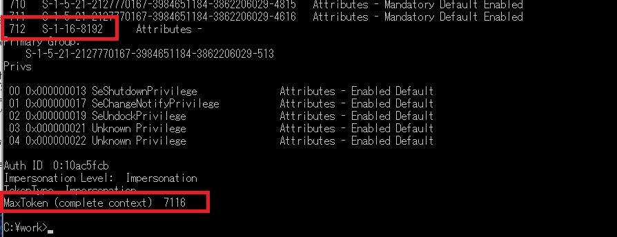

こんにちは、Exchange サポート チームの竹本です。
今回は、多くのセキュリティ グループに所属するユーザーに発生する可能性のある事象についてご紹介します。
なお、本事象はオンプレミスの Exchange サーバー、クラウド サービスの Exchange Online 双方で発生しうるものとなります。
事象について
まず Active Directory では、ユーザーが所属可能なグループ数の一つの基準として 1015 個といった制限があります。これは SID の制限値に起因しており、1015 個以上のグループのメンバーであるユーザーには Kerberos のセキュリティ トークンが正常に発行されない場合がある、といった事象になります。
Title : Users who are members of more than 1,015 groups may fail logon authentication
URL : https://support.microsoft.com/en-us/kb/328889
しかしながら Exchange サーバーをご利用の環境において、上記制限に抵触していない場合であっても、所属するセキュリティ グループ数が多い場合に以下のような事象が発生することがあります。
- スケジュール アシスタンス (Outlook/OWA 共に) で、他人の空き時間情報が参照できない
- Skype for Business で Exchange (EWS) 連携に失敗する
- Remote PowerShell の接続に失敗する
これらの事象は、グループ数の増加に伴い HTTP リクエストのヘッダー サイズやバッファ サイズが大きくなることに起因して発生します。
例えば他人の空き時間を参照する場合、Exchange サーバーでは自身のメールボックスを保持するサーバーから参照先となるメールボックスを保持するサーバーに対して、HTTP リクエスト (EWS) のプロキシ処理が発生します。このプロキシ処理の過程で EWS の SOAP リクエストが生成されますが、SOAP 内のリクエスト ヘッダーには、そのユーザーが所属する全てのセキュリティ グループの情報 (ネストされた親グループを含む) が含まれます。そのため所属グループの総数に比例してヘッダー サイズも大きくなり、そのようなヘッダーを含むリクエストが、プロキシ先となるサーバー (IIS) で許容されるバッファ サイズの上限に抵触し、HTTP Status Code 400 (Bad Request) と共に失敗することがあります。
対処について
一部のユーザーにおいてのみ上記のような事象が発生する、といった場合には、まずはそのユーザーが所属するグループの数が他の正常なユーザーと比較して多い状態にないか、ご確認ください。
なお、ここで確認すべき対象は “ネストされた親グループも含めて” の情報となりますので、直接所属しているグループ (ユーザー アカウントのプロパティ、”所属するグループ” に表示されるグループ) のみではありません。
次に “いくつ以上だと問題が発生しうるか” といった点についてですが、こちらは残念ながら明確な定義がありません。これは、上述したヘッダーに含まれるグループの情報が全て可変長のデータであり、サイズが固定されていないためです。そのためあくまでも 1 つの参考値とはなりますが、これまでにお寄せいただいているお問い合わせの中では、600 以上のグループに所属するユーザー様で上記の事象が発生したとの報告がありました。
お客様にはご面倒をおかけすることとなりますが、所属するグループの数が起因して問題が発生しているように見受けられる場合には、以下のような点でグループ メンバシップの最適化を行い、現象の解消可否をご確認ください。
- 所属グループ (または権限) の重複をなくす
- 一度に大量の親グループに所属させるのではなく、必要な場合のみ必要なグループのメンバーにする
- 必要な権限を少数のグループに付与するようにし、所属グループの絶対数を減らす
* オンプレミスの Exchange サーバーにおいては、Exchange 2010 SP1 RU4 以降で用意されているスクリプトを使用したり、手動でレジストリの変更等を行うことで、IIS 側の各種制限を緩和する (サイズの上限を変更する) ことでも対処が可能です。詳細は以下の KB をご参照ください。
Title : You cannot view the free/busy information of users in a mixed Exchange Server 2007 and Exchange Server 2010 environment
URL : https://support.microsoft.com/kb/2491354/en-us
Title : “HTTP 400 - Bad Request (Request Header too long)” error in Internet Information Services (IIS)
URL : https://support.microsoft.com/en-us/kb/2020943
所属グループの確認方法について
ネストされたグループも含め、ユーザーが所属するすべてのグループ情報をリストアップする方法はいくつかありますが、最も簡単な方法は以下のコマンドです。
whoami /groups
また、以下よりダウンロード可能な Tokensz.exe を利用すると、さらにグループの総数やそのユーザーが取得している Kerberos トークンのサイズについても確認することができます。
Title: Tokensz.exe
URL: http://www.microsoft.com/en-us/download/details.aspx?id=1448
以下は “Tokensz.exe /Dump_groups /Compute_tokensize” と引数を付け実行した際の結果末尾ですが、このユーザーが 712 のグループに所属しており、Kerberos のセキュリティ トークン サイズ (MaxToken) が 7116 byte であることも確認できます。

* なお、今回ご紹介している Exchange サーバーの事象自体は IIS の制限に起因したものとなり、上記 MaxToken の値は直接的には関係ありません。 Kerberos のセキュリティ トークンについては以下でご紹介しておりますので、興味のある方はご参照ください。
Title : Problems with Kerberos authentication when a user belongs to many groups
URL : https://support.microsoft.com/en-us/kb/327825
上記情報が、Exchange サーバー / Exchange Online をご利用のお客様に少しでも役に立ちましたら幸いです。
今後も当ブログおよびサポート チームをよろしくお願いいたします。